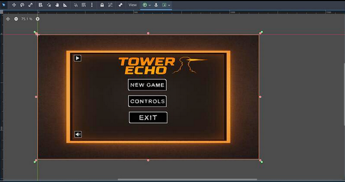
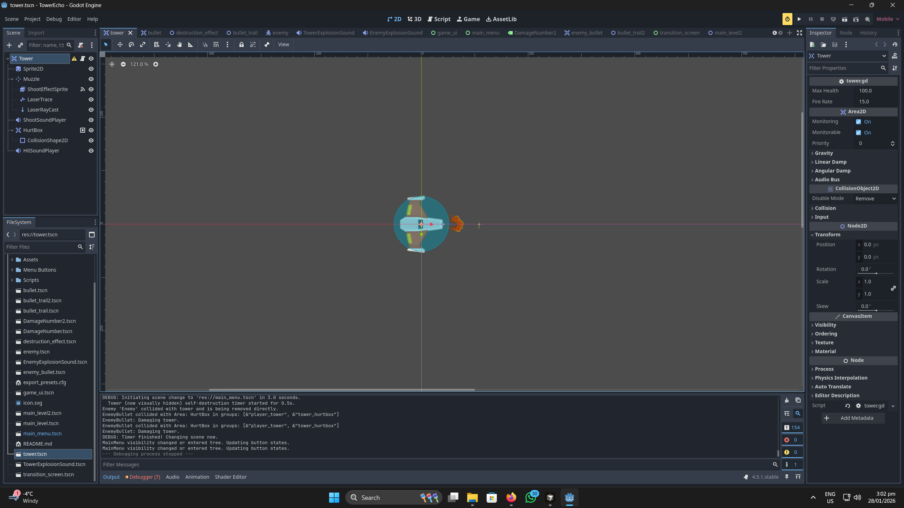
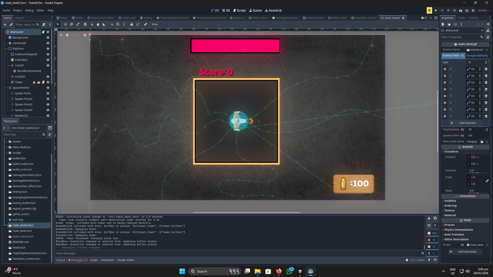

Project Overview
TowerEcho is a complete 2D tower defense game built from scratch in Godot Engine using GDScript. Players defend their base with a mouse-controlled turret against waves of enemies that follow randomized paths through handcrafted levels. The game emphasizes skill-based aiming, resource management, and satisfying combat feedback through polished VFX, SFX, and UI.
Genre
2D Tower Defense
Studio
Personal Project
Platform
PC, Mac OS, Linux
Engine & Tools
Godot Engine 4, GDScript
Duration
May 2025 – Present
Team Size
Solo Developer
Tech Stack
Core Engine & Scripting
- Godot Engine 4
- GDScript
- 2D Game Development
- Scene Architecture
- Object Pooling
Gameplay & AI
- Navigation2D / Ai Pathfinding
- Enemy AI & Wave Spawning
- Combat & Projectile Physics
- State Management
- Score & Combo Systems
UI/UX & Polish
- HUD & Menu Design
- Particle Systems (50+ VFX)
- Screen Shake & Tweens
- SFX Integration (12 unique)
- ScreenFader & Transitions
Systems & Persistence
- Advanced Save System
- Singleton Managers (GameState, Audio)
- Desktop/Mobile Input
- JSON Serialization
Features & Contributions
Main Menu & Setup
Main menu offers New Game, Controls (interactive mouse-aim demo), Resume (load last save), Exit, and an animated sound toggle. Clean navigation with ScreenFader handling all scene transitions.

Mouse-Aimed Turret & Combat
Hold to fire continuously toward the cursor. Turret rotates smoothly with instant feedback via laser traces and muzzle flash. Health bar (green → yellow → red), ammo counter (150 max), and score milestones: every 100 points regenerates 10% health and 20 ammo. Combo kills increase score multiplier.

Enemy AI & Waves
Eight enemy types with pathfinding via Navigation2D; paths randomize at wave start. Multi-hit health (50–200 HP), red flash + vibration on damage, particle burst on death. 40% of enemies fire homing projectiles—player and enemy bullets can collide mid-air. Final wave includes a boss with shield phase and damage phase.

Advanced Save System
Pause (ESC) saves complete state: tower health/position/rotation, score/ammo/combo, all enemy positions and health, audio position, wave number, and UI state. Resume restores exactly where you left off, including mid-explosion VFX and bullet trajectories. Save auto-clears on victory or defeat.
Audio-Visual Polish
12 unique SFX (muzzle, hit, bullet collision, tower damage, victory) with pitch variation. 50+ particle systems, floating damage numbers, camera shake, color grading shifts at low health. Tween-based UI animations and synchronized audio-visual feedback for immersive combat.
Technical Implementation
Architecture & Managers
Singleton managers handle global concerns: GameState for score, ammo, wave, and persistence; AudioManager for music and SFX with position restore; ScreenFader for all scene transitions. Modular scene setup (Enemy.tscn, Bullet.tscn, Tower.tscn) keeps systems decoupled and testable.
Enemy pathfinding
Enemies use Godot’s Navigation2D to build paths from randomized spawn points to the player base. In _physics_process, each enemy moves toward the next path point; on arrival it advances the index. Reaching the goal calls attack_base() and deducts 25 tower HP. Paths are recomputed at wave start for varied runs.
Wave spawning & difficulty
Wave logic uses base_enemies + (wave_number * 2) for count and a decreasing spawn delay. Each wave picks random enemy types and spawn points, then spawns with await get_tree().create_timer(spawn_delay).timeout between spawns. Boss wave uses a dedicated tank enemy with shield and damage phases.
Save & resume
Save builds a dictionary (tower state, score/ammo/combo, enemy positions/health, audio position, wave, UI state) and writes it as JSON to user://savegame.dat via FileAccess. Load reads the file, parses JSON, and restores every manager and scene; mid-flight bullets and VFX state are reconstructed so the session continues exactly from the pause moment.
Performance & input
Object pooling for bullets and particles keeps 2000+ instances on screen without churn. Unified input mapping supports desktop mouse and gamepad so the same combat and menu logic works across targets. Damage numbers and UI pops use Tween nodes for smooth, optional animations.